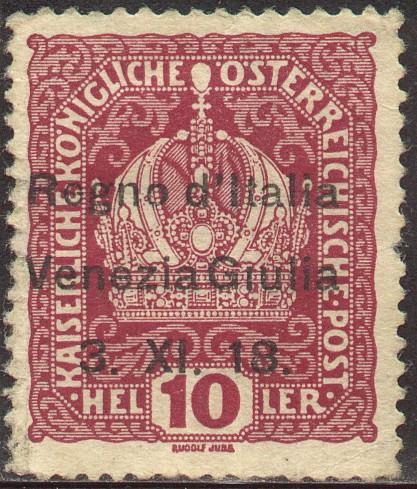
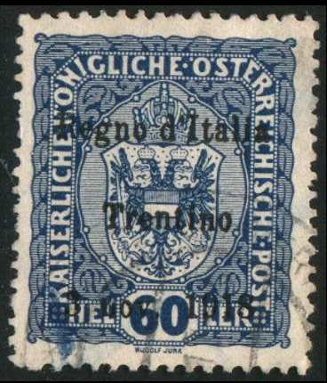
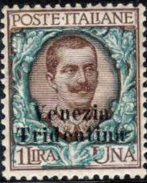
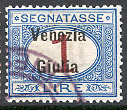
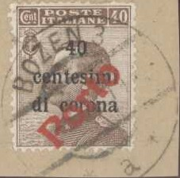

Return To Catalogue - Austria - Italy - Venezia Giulia 'AMG VG' overprints on Italy (1945)
Note: on my website many of the
pictures can not be seen! They are of course present in the
catalogue;
contact me if you want to purchase the catalogue.
(Reduced size)
3 h violet 5 h green 6 h orange 10 h red 12 h blue 15 h red 20 h green 25 h blue 30 h lilac 40 h olive 50 h green 60 h blue 80 h brown 1 Kr red on yellow 2 Kr blue 3 Kr red 4 Kr green 10 Kr violet
Value of the stamps |
|||
vc = very common c = common * = not so common ** = uncommon |
*** = very uncommon R = rare RR = very rare RRR = extremely rare |
||
| Value | Unused | Used | Remarks |
| 3 h | * | * | Exists with double or inverted overprint |
| 5 h | * | * | Exists with inverted overprint |
| 6 h | ** | ** | |
| 10 h | * | * | Exists with inverted overprint |
| 12 h | *** | *** | Exists with double overprint |
| 15 h | * | * | Exists with double or inverted overprint |
| 20 h | * | * | Exists with inverted overprint |
| 25 h | *** | *** | |
| 30 h | ** | ** | |
| 40 h | RR | RR | |
| 50 h | ** | ** | |
| 60 h | *** | *** | |
| 80 h | *** | *** | |
| 1 K | *** | *** | |
| 2 K | RR | RR | |
| 3 K | RR | RR | |
| 4 K | RR | RR | |
| 10 K | RRR | RRR | Overprint different from other stamps; more blurred |
Forged overprints on genuine stamps exist, the Serrane guide mentions Fournier forgeries and Genoa forgeries, example:
Forged overprint on a 40 h stamp, reduced size


3 h violet 5 h green 6 h orange 10 h red 12 h blue 15 h red 20 h green 25 h blue 30 h lilac 40 h olive 50 h green 60 h blue 80 h brown 90 h lilac 1 Kr red on yellow 2 Kr blue 4 Kr green 10 Kr violet
The stamps 10 h, 15 h and 20 h exist with an error: '8 nov' instead of a '3 nov' (very rare).
Value of the stamps |
|||
vc = very common c = common * = not so common ** = uncommon |
*** = very uncommon R = rare RR = very rare RRR = extremely rare |
||
| Value | Unused | Used | Remarks |
| 3 h | ** | ** | Exists with double or inverted overprint |
| 5 h | * | * | |
| 6 h | R | R | |
| 10 h | * | * | |
| 12 h | RR | RR | |
| 15 h | *** | *** | |
| 20 h | * | * | Exists with double or inverted overprint |
| 25 h | *** | *** | |
| 30 h | *** | *** | |
| 40 h | *** | *** | |
| 50 h | *** | *** | Exists with inverted overprint |
| 60 h | R | R | Exists with double overprint |
| 80 h | RR | RR | |
| 90 h | RRR | RRR | |
| 1 K | R | R | |
| 2 K | RR | RR | |
| 4 K | RRR | RRR | |
| 10 K | RRR | RRR | Only 11 stamps issued. |
These overprints are known to have been forged, the Serrane guide mentions Genoa forgeries, example:

(Forged overprint)
1 c brown 2 c brown 5 c green 10 c red 20 c orange 25 c blue 40 c brown 45 c green 50 c violet 60 c red 1 L brown and green Express stamp
25 c red Surcharged in 'Heller'
5 h on 5 c green 20 h on 20 c orange
Value of the stamps |
|||
vc = very common c = common * = not so common ** = uncommon |
*** = very uncommon R = rare RR = very rare RRR = extremely rare |
||
| Value | Unused | Used | Remarks |
| 1 c | * | * | Exists with inverted overprint |
| 2 c | * | * | Exists with inverted overprint |
| 5 c | c | c | Exists with inverted overprint |
| 10 c | c | c | Exists with inverted overprint |
| 20 c | c | c | |
| 25 c | * | * | |
| 40 c | ** | ** | |
| 45 c | * | * | |
| 50 c | *** | *** | |
| 60 c | *** | *** | |
| 1 L | *** | *** | |
Express |
|||
| 25 c | *** | *** | |
| Surcharged | |||
| 5 h on 5 c | * | * | Exists with inverted overprint Some rare misprints exist |
| 20 h on 20 c | c | * | Exists with double overprint |
Forged overprints exist, the Serrane guide mentions Paris forgeries (often on stamps with dates earlier than 1919) and Genoa forgeries. In Le Postillon Revenue Philatelique of June 1920, page 406, it is mentioned that there were already 16 forged overprints known then.
I've seen a postcard "CARTOLINA POSTALE ITALIANA" of Italy in a similar design as the postage stamp of 10 c red, with overprint 'Venezia Giulia' as on the postage stamps.



1 c brown 2 c brown 5 c green 10 c red 20 c orange 40 c brown 45 c green 50 c violet 1 L brown and green Surcharged in 'Heller'

5 h on 5 c green 10 h on 10 c red 20 h on 20 c orange
Double and inverted overprints exist.
Value of the stamps |
|||
vc = very common c = common * = not so common ** = uncommon |
*** = very uncommon R = rare RR = very rare RRR = extremely rare |
||
| Value | Unused | Used | Remarks |
| 1 c | * | * | |
| 2 c | * | * | |
| 5 c | * | * | |
| 10 c | * | * | |
| 20 c | ** | ** | |
| 40 c | *** | *** | |
| 45 c | *** | *** | |
| 50 c | *** | *** | |
| 1 L | *** | *** | |
| Surcharged | |||
| 5 h on 5 c | c | c | |
| 10 h on 10 c | c | * | |
| 20 h on 20 c | c | * | |
1 c on 1 c brown
2 c on 2 c brown
5 c on 5 c green (2 types, one for Dalmatia and one for Trentino-Trieste)
10 c on 10 c red (2 types, one for Dalmatia and one for Trentino-Trieste)
20 c on 20 c orange
25 c on 25 c blue (2 types, one for Dalmatia and one for Trentino-Trieste)
40 c on 40 c brown
45 c on 45 c green
50 c on 50 c violet (2 types, one for Dalmatia and one for Trentino-Trieste)
60 c on 60 c red
'1 corona' ('1 corona' in two lines) on 1 L brown and green
'1 corona' ('1 corona' in one line, issued for Dalmatia) on 1 L brown and green
'una corona' on 1 L brown and green
'5 corone' on 5 L blue and red (issued for Dalmatia)
'10 corone' on 10 L green and lilac (issued for Dalmatia)
Express stamps
'25 centesimi di corona' (in two lines, issued for Trentino-Trieste) on 25 c red '25 centesimi di corona' (in three lines, issued for Dalmatia) on 25 c red '30 centesimi di corona' on 30 c blue and red (issued for Trentino-Trieste) 'LIRE 1,20 DI CORONA' on 1.20 L blue and red (issued for Dalmatia)
Several minor varieties in the overprints can be found (for example 'cent' without 'c' in the 20 c).
Value of the stamps |
|||
vc = very common c = common * = not so common ** = uncommon |
*** = very uncommon R = rare RR = very rare RRR = extremely rare |
||
| Value | Unused | Used | Remarks |
| 1 c on 1 c | c | c | Exists with inverted overprint: *** |
| 2 c on 2 c | c | c | Exists with inverted overprint: *** |
| 5 c on 5 c | c | c | Exists with double overprint: RR |
| 10 c on 10 c | c | c | Exists with inverted overprint: RR Exists with double overprint: RR |
| 20 c on 20 c | c | c | |
| 25 c on 25 c | c | c | |
| 40 c on 40 c | c | * | |
| 45 c on 45 c | * | * | |
| 50 c on 50 c | * | * | |
| 60 c on 60 c | * | * | |
| 1 C on 1 L | * | * | Surcharge in two lines |
| 1 C on 1 L | * | * | Surcharge in one line |
| 5 C on 5 L | *** | *** | |
| 10 C on 10 L | *** | *** | |
| una C on 1 L | * | * | |
| Express stamps | |||
| 25 c on 25 c | c | * | Exists with double overprint: RR |
| 30 c on 30 c | * | * | |
| 1.20 L on 1.20 L | R | ? | |
I have seen a postcard 'CARTOLINA POSTALE CON RISPOSTA PAGATA' in the value 10 c (same design as the postage stamp) with the same overprint '10 centesimi di corona'.


5 c orange and red 10 c orange and red 20 c orange and red 30 c orange and red 40 c orange and red 50 c orange and red 1 L blue and red
Value of the stamps |
|||
vc = very common c = common * = not so common ** = uncommon |
*** = very uncommon R = rare RR = very rare RRR = extremely rare |
||
| Value | Unused | Used | Remarks |
| 5 c | c | * | Exists with inverted overprint: RR |
| 10 c | c | * | |
| 20 c | * | * | |
| 30 c | ** | ** | |
| 40 c | *** | *** | |
| 50 c | *** | *** | |
| 1 L | RR | RR | |
Forged overprints exist, the Serrane guide mentions Paris forgeries (by 'H.') and Genoa (by 'I.'; Imperato?) forgeries.
 Highly
dubious stamps with "GORZ 22 XII. 18 -- *4b*" cancels
Highly
dubious stamps with "GORZ 22 XII. 18 -- *4b*" cancels

5 c on 5 c orange and red 10 c on 10 c orange and red 20 c on 20 c orange and red 30 c on 30 c orange and red 40 c on 40 c orange and red 50 c on 50 c orange and red (two types, one for Trientino-Trieste and one for Dalmatia) 'una corona' on 1 L blue and red '1 corona' on 1 L blue and red (issued for Dalmatia) 'due corone' on 2 L blue and red '2 corone' on 2 L blue and red (issued for Dalmatia) 'cinque corone' on 5 L blue and red '5 corone' on 5 L blue and red (issued for Dalmatia)
Value of the stamps |
|||
vc = very common c = common * = not so common ** = uncommon |
*** = very uncommon R = rare RR = very rare RRR = extremely rare |
||
| Value | Unused | Used | Remarks |
| 5 c on 5 c | c | c | Exists with inverted overprint: R |
| 10 c on 10 c | c | c | |
| 20 c on 20 c | c | c | |
| 30 c on 30 c | c | c | |
| 40 c on 40 c | c | c | |
| 50 c on 50 c | * | * | |
| 'una corona' on 1 L | *** | *** | |
| '1 corona' on 1 L | * | * | |
| 'due corone' on 2 L | R | R | |
| '2 corone' on 2 L | ** | *** | |
| 'cinque corone' on 5 L | R | R | |
| '5 corone' on 5 L | *** | *** | |

Some postmasters produced 'T' overprints or 'TAXE' (with or without value) or 'Porto' overprints. These overprints were specifically forbidden by the authorities and can thus be considered as unauthorized. Some examples are shown above.
The next 'postage due stamp' was probably created under similar circumstances:

Postage stamp of 60 c overprinted 'T' in Daiano (Trentino)
Example, fiscal stamp of Italy ('MARCA DA BOLLO', 20 c red) surcharged 'CORONE 0,20':


{kind=link}
{kind=link}
{kind=link}
{kind=link}